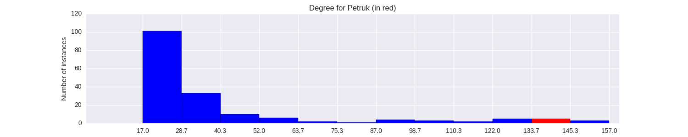

Quantiative Wayang Dictionary
Petruk
Type: Human
Origin: Java
Notes on the Sanskrit version: Not mentioned in the Indian Mahabharata.
Alternative names: Kantong, Bolong, Udawala, Dawala, Dublajaya, Jengglongjaya, Pentung Pinanggul
Description in the Javanese version: There are multiple versions of his origin. Petruk and Gareng are the sons of the giant [Bausasra], and their original names are Kuncir and Kuncung. They are mistreated by their stepmother and run to Karangkadempel, where Semar receives them as his own children. In another version, they are originally Bambang Sukadadi and Bambang Precupanyukilan. They are both handsome warriors who like travelling around the world. One one occasion, they meet and fight about which of them is the most handsome one. Semar intercedes and they ask for his opinion. He says neither is handsome and when they look at their reflections on a lake, they realize their shapes have been changed. They then ask to follow Semar and he changes their names to Gareng and Petruk, respectively. In the third version, Petruk is the son of Suwala, a gandarwa from Pecuk Pacukilan. His original name was Suparta. His father felt he could not properly take care of him and gave him to Semar.
Petruk once became king of Ngrancangkencana. He was finally defeated by Gareng, who was disguised as [Pandu_Pregola]. In another version, he was temporarily a king with the name [Gurdinadur]. He is known as a happy character, with a great knowledge of musical melodies. In some versions, his wife is not [Ambarawati] but [Prantawati].
Found in the follwing lakon (stories):
- Narayana_Kridha_Brata
- Wisanggeni_Lahir
- Semar_Boyong_(Wahyu_Katetreman)
- Puntadewa_Wisudha
- Wahyu_Topeng_Waja
- Semar_Mantu
- Semar_Barang_Jantur
- Semar_mBangun_Kayangan
- Basudewa_Grogol
- Brajadhenta_Mbalela_(Gatotkaca_Wisudha)
- Prabu_Bimasakti
- Kunthi_Pilih_(Lahiripun_Adipati_Karna)
- Babad_Wanamarta
- Wahyu_Kaprawiran
- Semar_Mantu_Alternative_Version
- Bandung_Nagasewu
- Wahyu_Kembar
Family relationships
Father: Semar
Consorts: Ambarawati
Offspring: Lengkungkusuma
More information
Wanda: Surakarta: Jamblang, Jengglong, Dlongop, Mesem, Moblong; Yogyakarta: Jamblang, Bujang, Jlegong
Sources: Ensiklopedi Wayang Purwa, pp. 398-402; Mengenal Gambar Tokoh Wayang Purwa, p. 185; Sejarah Wayang Purwa, pp. 912-913; Ensiklopedi Wayang Indonesia, pp. 138-143 (Vol. VII)
Network measurements for Petruk
| Measurement | Value | |
|---|---|---|
| Degree | 140.0 |  |
| Weighted Degree | 557.0 |  |
| Closeness Centrality | 0.836538461538 |  |
| Betweeness Centrality | 691.038792362 |  |
| Eigenvector Centrality | 0.92493930006 |  |
{kind=link}
Characters in the same adegan as Petruk
| Character | Link weight |
|---|---|
| Character | Link weight |